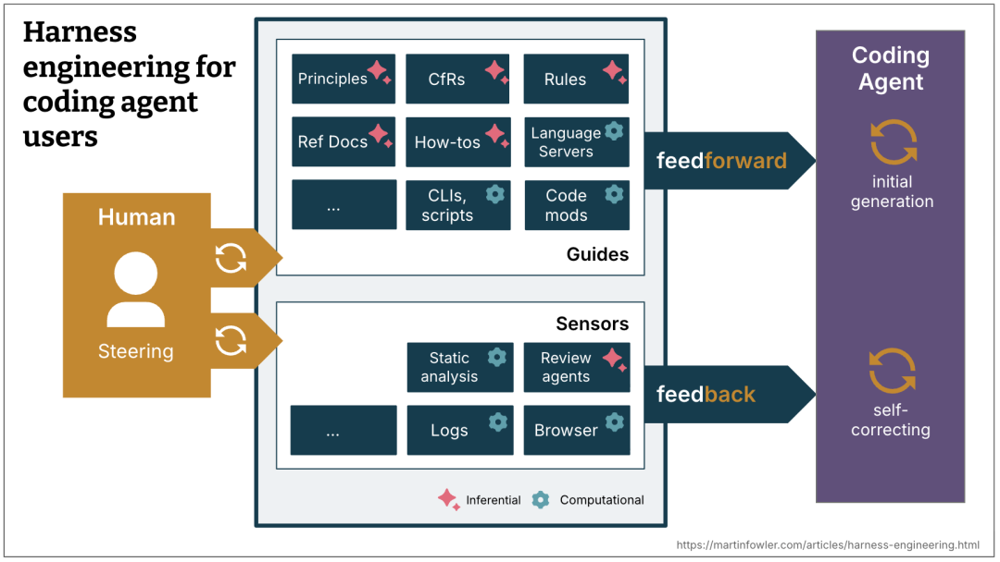
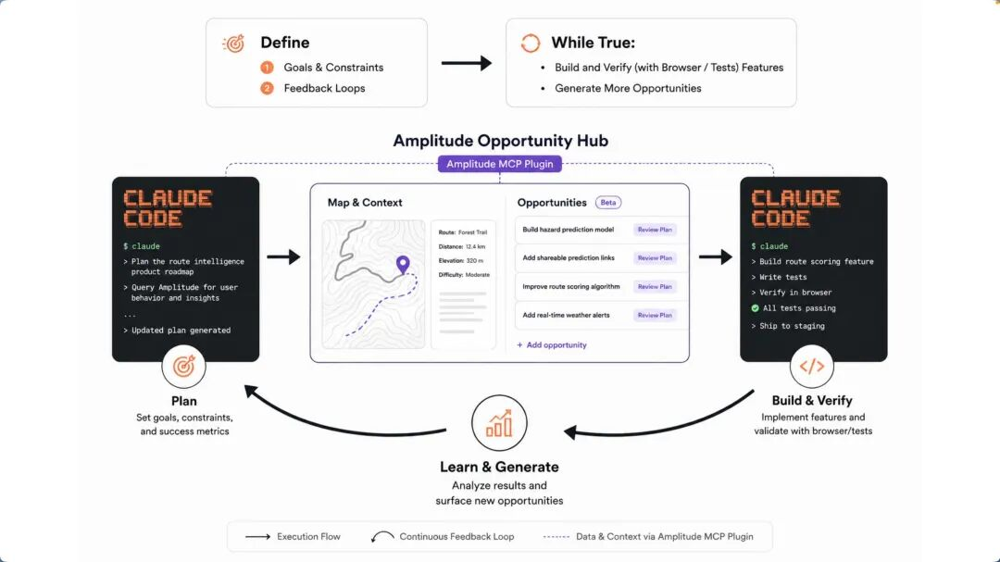
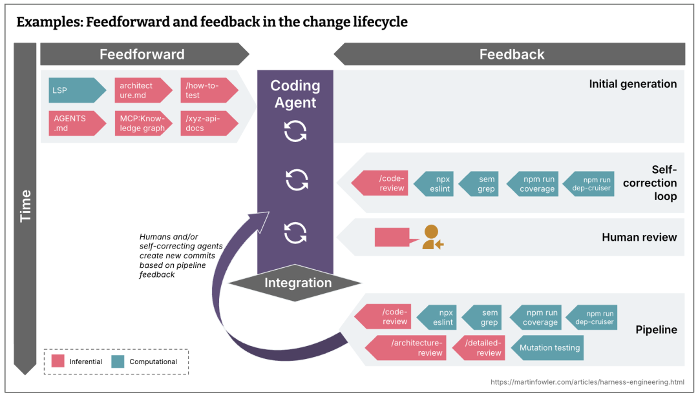

本文探讨了“Loop engineering”这一理念，即工程师不再逐轮提示agent，而是设计包含读取状态、判断任务、执行操作、验证结果、记录状态和判断停止条件的自动化循环系统。文章详细拆解了支撑该系统的六大组件：负责唤醒的自动化机制、隔离并行的worktrees、沉淀项目知识的skills、接入外部工具的插件、分离读写职责的子agent以及确保状态持久化的记忆层。作者强调，loop engineering并非盲目追求全自动，而是通过明确输入输出、严格权限分层与成本控制来保障工程可靠性。工程师的角色从单轮操作者转变为循环机制的设计者与最终责任人，其核心价值在于利用可控的自动化杠杆加深对系统的理解，而非单纯甩锅给AI以逃避责任。

摘要
最近，coding agent 圈子里有一句话传得很快：不要再只是提示 agent，要设计提示 agent 的 loop。
这句话容易被误读成一个新名词。其实它说的是一个老问题：当工具开始能自己读代码、改代码、跑测试、开 PR 以后，工程师的工作重心会往哪里移？
过去的用法很直接。你写 prompt，agent 回答。你贴报错，agent 修改。你看 diff，继续追问。人一直握着方向盘。
Loop engineering 处理的是另一层工作。你不再亲自推动每一轮，而是设计一个小系统，让它按固定节奏发现任务、选择下一步、调用 agent、检查结果、记录状态，并决定是否继续。人还在系统里，只是位置变了：从每一轮的操作者，变成循环机制的设计者和最后的责任人。
这个变化有用，但也很容易变成另一种自动化幻觉。
最近我看到在 HN 和 Reddit：有人在转 Addy 的文章，也有人直接问"loop engineering 是不是又一个 buzzword"。这种怀疑不是坏事。loop engineering 如果只是给自动化换个名字，确实没什么意思；只有当它把状态、验证、权限和停止条件都写进工程流程里，它才和普通的"让 agent 多跑几轮"不一样。

概念界定：先把 loop 说清楚
概念界定：先把 loop 说清楚
这里的 loop 不是 while true，也不是把一个 prompt 定时重放。
一个能工作的工程 loop 至少有六个动作：
读取外部状态：CI、issue、PR、日志、用户反馈、代码 diff。
判断下一步：哪些问题值得处理，哪些应该忽略，哪些需要人判断。
执行任务：让 agent 查代码、改代码、写测试或更新文档。
验证结果：运行测试、复现路径、浏览器检查、代码审查或安全扫描。
写入状态：把结论、失败原因、已尝试方案和下一步写到对话之外。
判断停止条件：继续、重试、换策略、升级给人，或者结束。
少了第 5 步，它只是一次会话。少了第 6 步，它就是烧 token 的定时器。
这也是为什么 Addy Osmani 在《Loop Engineering》[1]里把它放在 agent harness 之上。Harness 解决的是一个 agent 在什么环境里运行；loop 解决的是这些 agent 什么时候被唤醒、拿什么上下文、做哪类事、由谁检查、状态放在哪里。
这里还要补一层。Birgitta Böckeler 在 Martin Fowler 网站上的《Harness engineering for coding agent users》[2]把 harness 拆成两类控制：事前的 guides，事后的 sensors。前者把规则、架构约束、技能文档和上下文喂给 agent；后者用测试、lint、日志、浏览器、review agent 或安全扫描让 agent 自我修正。放到 loop 里看，harness 是控制件，loop 是调度和闭环。只有调度，没有控制件，就是定时犯错；只有控制件，没有循环，就还是一次性工具。
图 1. Harness engineering overview。来源：Harness engineering for coding agent users [3]。
更直白地说：prompt engineering 关心一句话怎么写。context engineering 关心给模型什么材料。harness engineering 关心工具、权限和运行环境。loop engineering 关心这些东西如何持续运转。

研究背景与相关工作：
为什么现在讨论 loop
研究背景与相关工作：
为什么现在讨论 loop
研究背景与相关工作：
为什么现在讨论 loop
因为产品能力正在凑齐。
Codex app 文档里已经能看到 automations、worktrees、skills、plugins、MCP、subagents、memories，以及 Goal mode。
Claude Code 也在往同一类工作流靠近：scheduled tasks、/loop、goals、hooks、skills、subagents、worktrees 和 MCP。名字不同，形状很接近。
这不表示两个工具完全等价。权限、持久化、审计和执行环境的差异会影响能不能放到生产流程里。但从工程模式看，大家都在往同一个方向走：agent 不再只是聊天框里的代码助手，它开始被放进持续运行的工程流程。
OpenAI Cookbook 里的 agent improvement loop 也在讲类似思路：真实 traces 是输入证据，人工和模型反馈负责诊断，eval 变成可复用验收，handoff artifact 把下一轮要改什么写下来，最后再交给 Codex 修改 agent 或 harness。它有价值的地方不在"让 AI 改 AI"，而在于把反馈、验证、状态和权限边界接到同一个流程里。
Amplitude 的 Ralph loop 实验[4]更激进。它把产品数据、机会生成、浏览器验证和 coding agent 接在一起：每轮先构建下一个 opportunity，再用浏览器点通新功能，生成新的机会队列。作者还让 agent 给自己产出的功能埋点，下一轮就能看到哪些路径被用过、哪里卡住；每个 PR 附一个浏览器录制的 GIF，当作验证证据。到后期，他只允许少数低风险机会类型自动合并，涉及用户数据的改动仍然保留人工判断。

图 2. Ralph Loop。来源：What I Learned Pointing a Ralph Loop at My Product for a Week[5]。
最近的研究也在拆这个问题。论文《Engineering Robustness into Personal Agents with the AI Workflow Store》[6]盯着 on-the-fly agent loop 的弱点：agent 临场合成计划、临场串工具，速度很快，但很容易跳过软件工程里那些麻烦却必要的步骤，比如迭代设计、严格测试、对抗评估和分阶段发布。它的答案不是让 agent 更会即兴发挥，而是把可靠流程沉淀成可复用、受约束的 workflow。
另一篇《EurekAgent》[7]说得更像工程实践：权限、artifact、预算和 human-in-the-loop 不只是配套设施，它们会直接改变 agent 做事的方式。这两篇都不是在说"loop 越自动越好"，而是在说 loop 要能复用、能审计、能限制。
这组案例说明，loop engineering 的重点不是自动化程度，而是控制面。你设计的是任务入口、判断标准、权限边界、记忆方式、验证机制和停止条件。

系统构成：六个组件
系统构成：六个组件
系统构成：六个组件
▐ 4.1 Automations：心跳，不是大脑
▐ 4.1 Automations：心跳，不是大脑
▐ 4.1 Automations：心跳，不是大脑
Automation 负责把 loop 唤醒。
Codex 的 automations 可以按计划在项目上运行，结果进入 Triage inbox；如果没有发现，也可以自动归档。它还能结合 skills，把重复任务变成可维护的工作流。Claude Code 的 scheduled tasks[8] 和 /loop 则适合在一个 session 内反复检查某件事，比如部署是否完成、PR 是否有新评论、CI 是否变绿。
Hooks[9] 处在另一个位置。它不是定时器，而是生命周期事件上的确定性控制。Claude Code 的 hooks 可以在编辑后格式化代码，在工具调用前阻断敏感文件修改，在需要输入时发通知，也可以把上下文重新注入会话。放在 loop 里看，hooks 更像护栏：它不决定做什么任务，但能限制 agent 在执行过程中不能越过哪些边界。
这里最容易犯的错，是把 automation 当成智能本身。它只负责把任务按时唤醒，不负责替你定义判断标准。
所以 automation prompt 里最好同时写 feedforward 和 feedback。Feedforward 是 agent 开始前必须知道的约束：只看哪个 PR、不能碰哪些目录、什么风险必须停。Feedback 是它做完后必须接受的传感器：跑哪个测试、看哪个日志、贴哪个浏览器录制、让哪个 reviewer 读 diff。没有 feedforward，agent 会到处试；没有 feedback，它会把"我觉得可以"当成完成。

图 3. Change lifecycle。来源：Harness engineering for coding agent users[10]。
一个好的 automation prompt 应该写得像操作规程，而不是愿望清单：
读取最近 24 小时失败的 CI。只处理和当前 PR 相关的失败。如果失败来自依赖下载或外部服务超时，记录为 infra-flake，不改代码。如果失败能稳定复现，创建最小修复。每轮最多修改 3 个文件。测试通过后写入 loop-state.md。遇到权限、数据迁移或安全相关变更，停止并交给人。
坏的写法通常是这样：
每天帮我检查项目，有问题就修一下。这种写法把判断权交给模型猜。
▐ 4.2 Worktrees：并行之前先隔离
▐ 4.2 Worktrees：并行之前先隔离
▐ 4.2 Worktrees：并行之前先隔离
多个 agent 同时工作时，第一类失败不是推理失败，而是文件冲突。
Git worktree 给每个任务一个独立 checkout。Codex app 的 worktree 支持 也是围绕这个目标设计的：让多个线程在同一个 repo 上做独立任务，不干扰本地工作。Claude Code 也支持用 worktrees 隔离并行 session。
但 worktree 只解决机械冲突。它不解决 review 带宽。
如果你每天让 8 个 agent 各开一个 PR，但你只能认真读两个 diff，那系统吞吐没有提升，只是把瓶颈从"写代码"挪到了"理解代码"。更糟的是，这种瓶颈不一定马上报错。PR 都很小，测试也可能是绿的，但你的心智模型已经落后。
所以 worktree 的设计原则应该是：并行只用于低耦合任务，合并仍然按人的理解能力限流。
▐ 4.3 Skills：把项目知识写到系统外面
▐ 4.3 Skills：把项目知识写到系统外面
▐ 4.3 Skills：把项目知识写到系统外面
没有 skills 的 loop，每次醒来都像新来的同事。它要重新猜测试命令，重新理解目录结构，重新发现团队不喜欢哪种写法。
Skill 的价值不是让 prompt 更漂亮，而是把稳定知识移出对话上下文。Codex 官方把 skill 定义为可复用工作流的编写格式，一个 SKILL.md 可以带 scripts、references 和 assets。Claude Code 也采用相近的 skills 机制。
适合写进 skill 的内容包括：
如何运行单元测试、端到端测试、lint 和类型检查
哪些目录不能碰
哪些改动必须加迁移脚本
PR 描述必须包含什么
遇到 flaky test 如何分类
哪些历史事故不能重演
别把所有东西塞进一个大 skill。一个好 skill 应该小而明确，比如 triage-ci、fix-flaky-test、review-pr、frontend-qa、security-check。描述要直白，因为 agent 是根据描述决定是否加载它的。
这里有个很实际的收益：skills 省的不只是 token，还有误判。项目约定没有写下来时，agent 会用开源世界的常见模式补空白。你的项目越特殊，这种补空白越危险。
▐ 4.4 Plugins 和 connectors：让 loop 接触真实工具
▐ 4.4 Plugins 和 connectors：让 loop 接触真实工具
▐ 4.4 Plugins 和 connectors：让 loop 接触真实工具
只看文件系统的 loop 很快就不够用了。真实工程状态分散在 GitHub、Linear、Slack、Sentry、数据库、staging API、浏览器和 CI 系统里。
这里要分清三层东西。MCP 是工具和上下文接入协议。Connector 是面向某个外部系统的具体连接，比如 GitHub、Linear、Slack、Sentry 或 Figma。Plugin 是某些产品里的分发打包机制，可以把 skills、app integrations、MCP servers、配置和素材一起交给团队安装。plugin 只是分发和启用入口，不等于权限、审计和审批都已经设计好了。把这三层混在一起写，会误导团队以为装了一个包就等于有了完整控制面。
这一步会把 loop 从"给出建议"变成"参与流程"：
发现 CI 失败读取失败日志定位相关 commit在 worktree 里修复运行测试打开 PR关联 Linear ticket通知 Slack把结果写回状态文件
能力变强以后，权限设计也要跟着变严格。能读日志和能改生产数据库不是同一种权限。能开 PR 和能自动 merge 也不是同一种权限。
我的建议是按风险分层：
observe：只读，允许总结和分类。
propose：允许生成 patch 或 PR，但不允许合并。
act with approval：可执行外部动作，但关键步骤需要人批准。
autonomous：只给低风险、可回滚、验证强的任务。
大多数团队不应该一开始就追求 autonomous。先把 observe 和 propose 做扎实，收益已经很明显。
▐ 4.5 Sub-agents：maker 和 checker 分开
▐ 4.5 Sub-agents：maker 和 checker 分开
▐ 4.5 Sub-agents：maker 和 checker 分开
loop 里有一条很实用的经验：写的人和查的人要分开。
写代码的 agent 不适合做唯一裁判。它刚刚花了几轮说服自己这条路线成立，很容易继续相信自己的结果。Codex subagents 文档也提到，子 agent 适合把探索、测试和日志分析这类嘈杂工作移出主线程，避免 context pollution 和 context rot。
一个稳妥的分工是：
explorer 只读代码，定位问题和相关文件。
implementer 做最小修改。
verifier 复现问题、跑测试、检查验收条件。
reviewer 读 diff，找边界条件、回归风险和过度修改。
security reviewer 只处理权限、数据暴露、注入、依赖和密钥风险。
不是每个任务都需要五个 agent。sub-agents 会增加 token 成本，也会增加协调成本。它们适合用在两类地方：检查环节，以及可以并行的读多写少任务。
如果任务很小，一个 implementer 加一个 verifier 通常够了。
▐ 4.6 Memory：状态必须在对话之外
▐ 4.6 Memory：状态必须在对话之外
▐ 4.6 Memory：状态必须在对话之外
长期 loop 不能靠聊天记录活着。
上下文会压缩，线程会中断，模型会忘，agent 还会重复尝试同一条死路。外部状态层不是锦上添花，是 loop 能不能接着跑的前提。
Memory 可以很简单：
loop-state.md里面记录：
当前目标
已处理事项
已尝试方案
失败原因
已通过验证
需要人工判断的问题
下一轮入口
它也可以是 Linear board、GitHub labels、数据库表、PR comment 或 Codex memories。Codex memories 适合保存稳定偏好、项目约定和常见坑点，但强约束最好仍然放在 repo 文档、AGENTS.md 或 skill 里。原因很简单：团队规则应该可 review、可版本化、可共享。
一句话：模型可以忘，系统状态不能忘。

方法示例：一个真实可用的 loop
方法示例：一个真实可用的 loop
方法示例：一个真实可用的 loop
从一个低风险 loop 开始，不要从"全自动工程团队"开始。
比如 CI triage loop：
每天 9:00 运行。读取过去 24 小时失败的 CI。按失败类型分类：真实回归、flaky、infra、未知。只处理真实回归中影响当前 PR 的失败。每次最多修一个问题。必须先写复现步骤，再改代码。修复后运行对应测试。测试通过则开 PR 或更新当前 PR。测试不通过则记录失败原因。涉及迁移、安全、权限、账务、生产配置时停止。
这个 loop 不性感，但能落地。它的好处是边界清楚、输入稳定、输出可 review、失败可解释。
再往前一步，可以做 review comment loop：
定期读取 PR 上未解决的 review comments。把评论分成机械修改、需要判断、无法处理三类。机械修改直接提交 patch。需要判断的评论整理成问题列表。无法处理的评论说明原因。每次修改后运行最小相关测试。
这类 loop 比"帮我优化项目"可靠，因为目标和判断都没有交给模型自由发挥。
还有一种 loop 值得单独拎出来：harness maintenance loop。
每周读取最近合并的 agent PR 和 review comments。找出重复出现的失败模式：误改公共 API、漏跑迁移、测试只覆盖 happy path、过度重构。能用确定性工具拦住的，优先补 lint、类型检查、架构规则或测试夹具。只能靠语义判断的，更新 review skill 或 verifier prompt。每次只改一个 harness 控制件。记录这个控制件拦住了什么问题，以及有没有带来误报。
这个 loop 不直接交付功能，但它会让后面的功能 loop 更稳。很多团队会先迷上"让 agent 写更多代码"，但更该先问的是：怎样让 agent 少犯同一种错。

自动化判定标准：
判断一个 loop 是否值得自动化
自动化判定标准：
判断一个 loop 是否值得自动化
自动化判定标准：
判断一个 loop 是否值得自动化
我会用五个条件筛选：
输入是否稳定。CI、issue、review comments、日志都可以；模糊战略问题不适合。
输出是否可 review。PR、报告、状态文件、ticket 更新可以；隐式修改不行。
验证是否明确。测试、复现步骤、schema 校验、浏览器路径可以；"看起来更好"不够。
权限是否可控。默认只读或提案，逐步放开执行权限。
失败是否可恢复。失败最多产生一个待审 patch，而不是破坏共享环境。
现在我会再加一个条件：这个 loop 的产物能不能沉淀。一次性的 agent 对话失败了，最多留下聊天记录；一个好的 loop 失败了，应该能留下更好的 fixture、更明确的 rule、更小的 skill、更稳的脚本，或者一条以后能复用的 workflow。否则你只是在反复购买同一份现场发挥。
不满足这些条件时，不要急着自动化。先把流程写清楚。
风险分析：loop 的几个失败模式
风险分析：loop 的几个失败模式
风险分析：loop 的几个失败模式
▐ 7.1 目标函数太粗
▐ 7.1 目标函数太粗
▐ 7.1 目标函数太粗
"提升质量"、"优化体验"、"让项目更好"都不是合格目标。agent 会把它们翻译成自己能做的动作，比如重构、改文案、加测试、删重复代码。动作看起来合理，但未必解决你的问题。
目标要写成可验证条件：
让 checkout.spec.ts 中的 3 个失败用例通过，不能修改测试断言，不能改支付网关 mock 之外的生产逻辑。▐ 7.2 验证被 agent 自己吞掉
▐ 7.2 验证被 agent 自己吞掉
▐ 7.2 验证被 agent 自己吞掉
很多 agent 会在日志很长时总结成"测试通过大部分，只剩少量无关问题"。这句话在 loop 里应该直接判失败。
验证结果必须结构化。至少要记录命令、退出码、失败用例和是否满足停止条件。
▐ 7.3 状态文件没人读
▐ 7.3 状态文件没人读
▐ 7.3 状态文件没人读
写状态文件只是第一步。下一轮 prompt 必须显式要求先读状态文件，并根据状态决定是否继续。否则它就是一份没人看的日报。
▐ 7.4 并行制造理解债
▐ 7.4 并行制造理解债
▐ 7.4 并行制造理解债
并行 agent 很容易让人产生"产能翻倍"的错觉。合并后的系统你是否还理解，才是更难回答的问题。如果你没有读 diff，只是看 summary，这个债会积累得很快。
▐ 7.5 成本没有上限
▐ 7.5 成本没有上限
▐ 7.5 成本没有上限
Loop 的 token 成本不是账单问题，而是架构问题。没有上限的 loop 最后一定会被成本、噪音或误操作叫停。
每个 loop 都应该有预算：
每轮最多几次尝试
每天最多开几个 PR
sub-agents 只能在哪些任务启用
多久没有进展必须停止
什么时候必须交给人

工程责任：工程师还剩什么
工程责任：工程师还剩什么
工程责任：工程师还剩什么
loop 不会取消工程师的责任。它只是把责任挪到了更不容易偷懒的位置。
工程师仍然要决定什么值得自动化，哪些权限可以放开，哪些状态必须落盘，哪些 diff 必须人工读。停止条件也不能留给模型临场发挥。写不清停止条件的任务，通常也不该无人值守运行。
这也是 loop engineering 和"甩给 AI"的区别。
甩给 AI 的人会写：
帮我把项目维护好。做 loop engineering 的人会写：
每个工作日上午检查当前 PR 的 CI。只处理可稳定复现的测试失败。先定位失败用例和相关 diff。修改范围不得超过失败相关模块。运行对应测试。把命令、结果和下一步写入 loop-state.md。如果连续两次失败原因相同，停止并交给我。
前者是在购买安慰感。后者才是在设计系统。

结论
结论
结论
Loop engineering 不是一个新包装的 prompt 技巧。它更接近工程流程设计：节奏、上下文、工具、权限、验证、记忆、停止条件。
它可能成为 coding agent 的主要使用方式。原因不是 agent 已经可靠到可以无人管理，而是单次对话不适合承载复杂工程工作。只要 agent 开始跨多轮处理真实任务，状态、反馈和责任边界就绕不开。
直接提示 agent 仍然有用。很多任务就该在一轮对话里解决。不要为了显得先进，把所有事都做成 loop。
对于重复发生、边界清楚、验证明确、风险可控的工程任务，loop 值得做。
最后可以用一个很朴素的标准验收：这个 loop 是让你更理解系统，还是让你更少读代码、更少判断、更少承担责任。前者是杠杆，后者只是更快地欠债。

附录
附录
附录
[1] 《Loop Engineering》 :
https://addyosmani.com/blog/loop-engineering/
[2] 《Harness engineering for coding agent users》 :
https://martinfowler.com/articles/harness-engineering.html
[3] Harness engineering for coding agent users :
https://martinfowler.com/articles/harness-engineering.html
[4] Ralph loop 实验：
https://amplitude.com/blog/ralph-loop
[5] What I Learned Pointing a Ralph Loop at My Product for a Week :
https://amplitude.com/blog/ralph-loop
[6] 《Engineering Robustness into Personal Agents with the AI Workflow Store》:
https://arxiv.org/abs/2605.10907
[7] 《EurekAgent》:
https://arxiv.org/abs/2606.13662
[8] scheduled tasks :
https://code.claude.com/docs/en/scheduled-tasks
[9] Hooks :
https://code.claude.com/docs/en/hooks-guide
[10] Harness engineering for coding agent users
https://martinfowler.com/articles/harness-engineering.html

团队介绍
团队介绍
团队介绍
本文作者苏雄，来自淘天集团-会员技术团队。业务上，我们负责 88VIP、天猫积分、省钱卡、大会员、消费券等淘宝核心业务，同时支撑淘宝、千问、闪购等阿里业务的账号互联互通。技术上，我们深耕 AI 与业务融合，为消费者带来全新体验，为业务创造新增量。